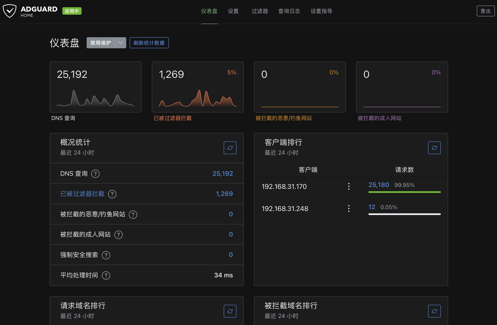

家庭网络全屋 DNS 广告拦截
Orange Pi + AdGuard Home 的全屋去广告尝试——上线过、误伤过、最后关了转自用。
起因
家里手机、平板、电视盒子都有广告，逐个装 App 去广告不现实。广告拦截的本质可以很简单：广告大多来自固定的几个域名，在 DNS 这一层把它们"查不到"就行了。一台 24 小时开机的迷你主机就能干这事。
方案与实现
硬件：Orange Pi Zero 3（1.5GB 内存），原来跑 DietPi 带图形界面卡得不行，重刷成 Armbian 精简版（Ubuntu 24.04 无桌面）。
部署：Docker 29.7 + Compose，容器里跑 AdGuard Home；另外用 Syncthing 做文件同步备份。
接入全屋（后来关了，见坑）：用 Python 脚本调小米路由器后台接口，给 DHCP 下发 DNS（主 DNS 指向 Orange Pi，备用 223.5.5.5 阿里公共 DNS，防止它挂了全屋断网）。小米路由器网页界面没有直接改 DHCP DNS 的入口，就从网页源码里翻出后台接口：登录加密是 SHA256 + 时间戳随机数，用 Python 模拟登录拿到管理令牌再改（脚本：miwifi_dhcp.py）。
固定 IP：路由器静态绑定接口全 404 不可用，最后没走路由器，直接在 Orange Pi 上用 NetworkManager 把 IP 固定成 .151。
踩过的坑
· Ubuntu 的 ARM 架构软件不在主仓库，而在单独的 ubuntu-ports 仓库，源写错就是一片 404；
· 默认国外软件源下载 6KB/s，换成阿里云镜像后 4.2MB/s；
· 开拦截后误伤过不少正常网站（验证码、部分 App 登录），调白名单效果有限——皮皮反馈后，8 月 16 日直接清空路由器 DHCP DNS，全屋拦截下线，AdGuard 改为只给自己设备手动 DNS 用；
· 恢复默认 DNS 的方法要留好：路由器界面清空 DNS 设置即可（miwifi_dhcp.py reset）；
· 这台 Orange Pi 后来（8 月 20 日）被重刷成了安卓电视盒子，Armbian 系统连同 AdGuard Home、Syncthing 一起没了——重部署的话需要重刷系统再来一遍。
现状
项目目前处于"暂停"状态：全屋拦截 8 月 16 日下线（误伤太多），AdGuard Home 只保留自用；之后这台 Orange Pi 转职成了电视盒子，AdGuard 就彻底没跑了。
经验没白费：DNS 广告拦截的原理、小米路由器接口逆向、静态 IP 的 NetworkManager 方案都记在笔记里，以后想重开随时能捡起来。